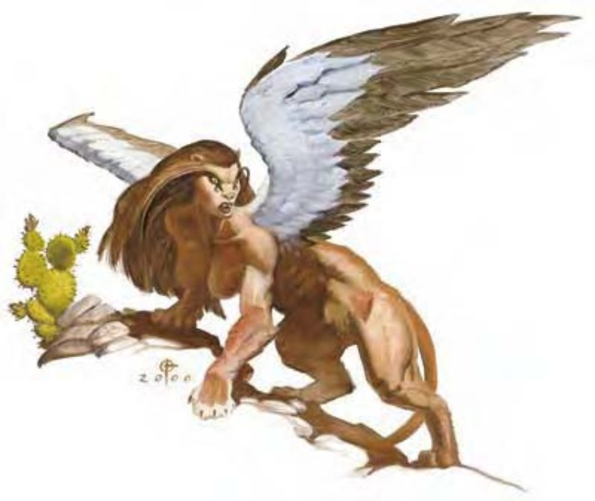

翔狮兽是谜一般的生物，有巨大的羽翼与狮身。所有翔狮兽都具有领域观念，但较具智力者能够分辨出是恶意入侵还是误入或借过。
一般翔狮兽身长10英尺，重约800磅。
翔狮兽通晓翔狮兽语、通用语与龙语。
大部分翔狮兽都在地面上战斗，他们利用羽翼辅助，像狮子般进行猛扑。如果被地面生物包围，翔狮兽会飞向空中进行攻击。
猛扑 (特异)：如果翔狮兽向对手冲刺，就算已经做出移动动作，仍可进行全力攻击（包括两次耙抓）。
耙抓 (特异)：猛扑到对手身上得翔狮兽可用前掌进行两次耙抓。其攻击加值与伤害列于每种翔狮兽的说明中。
这种生物比驿乘用马还大，有黄褐色的狮身、巨大的华翼，以及一张人脸。
男面翔狮兽只有雄性。他们聪明且通常天性善良，但仍是凶暴的对手。
虽然外形粗勇，脾气又坏，但男面翔狮兽具有一颗高贵的心，且有些羞怯。他们很注重小节礼，但却不愿意承认，受人称赞时更是感到不好意思。
| 资料栏位 | 男面翔狮兽 (Androsphinx) 大型魔法兽 |
| 生命骰 | 12d10+48 (114HP) |
| 先攻 | +0 |
| 速度 | 50英尺 (10格)、飞行80英尺 (不良) |
| 防御等级 | 22 (-1体型、+13天生)、接触9、措手不及22 |
| 基本攻击/擒抱 | +12 / +23 |
| 攻击 | 爪抓+18近战 (2d4+7) |
| 全力攻击 | 2爪抓+18近战 (2d4+7) |
| 占据/触及 | 10英尺 / 5英尺 |
| 特殊攻击 | 猛扑、耙抓2d4+3、怒吼、法术 |
| 特殊能力 | 黑暗视觉60英尺、昏暗视觉 |
| 豁免 | 强韧+12、反射+8、意志+7 |
| 属性 | 力量25、敏捷10、体质19、智力16、感知17、魅力17 |
| 技能 | 威吓+17、知识 (任一) +18、聆听+18、侦察+18、生存+16 |
| 专长 | 警觉、顺势斩、强力顺势斩、空袭、猛力攻击、追踪 |
| 环境 | 热暖带沙漠 |
| 组织 | 单独 |
| 挑战级数 | 9 |
| 宝藏 | 标准 |
| 阵营 | 总是混乱善良 |
| 进化 | 13-18HD (大型)；19-36HD (超大型) |
| 等级修正值 | +5 (部属) |
耙抓 (特异)：攻击加值+18近战、伤害2d4+3。
怒吼 (超自然)：男面翔狮兽每天可以怒吼三次。第一次怒吼时，500英尺内所有生物都需通过意志检定 (DC=19)，否则在2d4轮内会受到有如“恐惧术”效果影响。如果在同一次事件遭遇中，男面翔狮兽第二次怒吼，则250英尺内所有生物都需通过强韧检定 (DC=19)，否则会被麻痹1d4轮。如果怒吼的力量大到可对90英尺内的石英与水晶制品造成50点伤害，则它会对被压制的人造成2d8点伤害。咆哮的力量大到可对90英尺内的石英与水晶制品造成50点伤害。魔法物品、被持有或背负的物品若通过反射检定 (DC=19) 则不受影响。其他男面翔狮兽不受此效果影响。豁免检定DC的调整值与魅力调整值相同。
法术：男面翔狮兽施术时视同6级牧师，可以从牧师的法术列表中选取法术，并可选择下列领域法术：善良、医疗、保护。
一般已准备牧师法术：(5/5/5/4；豁免检定DC=13+法术等级)：
零级――“治疗小伤”、“侦测魔法”、“神导术”、“光亮术”、“提升抗力”；
一级――“神眷”、“防护邪恶”*、“虔诚护盾”、“移除恐惧”*、“祝福术”；
二级――“次级召唤怪物术”*、“蛮力术”、“治疗中度伤”、“抵抗能量伤害”、“护卫他人”*；
三级――“次级召唤怪物术”*、“治疗重伤”、“昼明术”、“消除隐形”、“灼热光辉”。
*领域法术。领域：善良与医疗。
这种生物比马还大，有黄褐色的狮身、巨大的华翼，以及一颗公羊头。
羊面翔狮兽只有雄性，不善良也不邪恶，且智力不如男面翔狮兽。羊面翔狮兽无止尽地寻找着女面翔狮兽，若找不到，则转向寻求财富。冒险者与羊面翔狮兽打交道的最佳方式，就是以全身财产换取过路平安。
| 资料栏位 | 羊首翔狮兽 (Criosphinx) 大型魔法兽 |
| 生命骰 | 10d10+30 (85HP) |
| 先攻 | +0 |
| 速度 | 30英尺 (6格)、飞行60英尺 (不良) |
| 防御等级 | 20 (-1体型、+11天生)、接触9、措手不及20 |
| 基本攻击/擒抱 | +10 / +20 |
| 攻击 | 抵撞+15近战 (2d6+6) |
| 全力攻击 | 抵撞+15近战 (2d6+6) 及 2爪抓+10近战 (1d6+3) |
| 占据/触及 | 10英尺 / 5英尺 |
| 特殊攻击 | 猛扑、耙抓1d6+3 |
| 特殊能力 | 黑暗视觉60英尺、昏暗视觉 |
| 豁免 | 强韧+10、反射+8、意志+9 |
| 属性 | 力量23、敏捷10、体质17、智力10、感知11、魅力11 |
| 技能 | 威吓+8、聆听+11、侦察+11 |
| 专长 | 警觉、顺势斩、空袭、猛力攻击 |
| 环境 | 热暖带沙漠 |
| 组织 | 单独 |
| 宝藏 | 标准 |
| 阵营 | 总是绝对中立 |
| 进化 | 11-15HD (大型)；16-30HD (超大型) |
| 等级修正值 | +3 (部属) |
羊面翔狮兽与其同类相同，都用爪抓攻击，但亦会用羊角抵撞。他们不会施法，战术也很简单。
耙抓 (特异)：攻击加值+15近战、伤害1d6+3。
这种生物比马还大，有黄褐色的狮身、巨大的华翼，以及一张女性人脸。
与男面翔狮兽相反，女面翔狮兽只有雌性。女面翔狮兽很愿意因为宝物与服务而进行交易。她们不断地寻求智力挑战――谜语、难题或其他类似测验都让她们爱不释手。她们讨厌男面翔狮兽与羊首翔狮兽。
| 资料栏位 | 女面翔狮兽 (Gynosphinx) 大型魔法兽 |
| 生命骰 | 8d10+8 (52HP) |
| 先攻 | +5 |
| 速度 | 40英尺 (8格)、飞行60英尺 (不良) |
| 防御等级 | 21 (-1体型、+1敏捷、+11天生)、接触10、措手不及20 |
| 基本攻击/擒抱 | +8 / +16 |
| 攻击 | 爪抓+11近战 (1d6+4) |
| 全力攻击 | 2爪抓+11近战 (1d6+4) |
| 占据/触及 | 10英尺 / 5英尺 |
| 特殊攻击 | 猛扑、耙抓1d6+2、类法术能力 |
| 特殊能力 | 黑暗视觉60英尺、昏暗视觉 |
| 豁免 | 强韧+7、反射+7、意志+8 |
| 属性 | 力量19、敏捷12、体质13、智力18、感知19、魅力19 |
| 技能 | 唬骗+15、专注+12、交涉+8、易容+4 (扮演+6)、威吓+13、聆听+17、察言观色+15、侦察+17 |
| 专长 | 战斗施法、精通先攻、钢铁意志 |
| 环境 | 热暖带沙漠 |
| 组织 | 单独或巫妪会 (2-4) |
| 宝藏 | 双倍标准 |
| 阵营 | 总是绝对中立 |
| 进化 | 9-12HD (大型)；13-24HD (超大型) |
| 等级修正值 | +4 (部属) |
近战时，女面翔狮兽会用强力爪抓剥下敌人的血肉。虽然具有致命本质，她们仍尽可能避免战斗。
耙抓 (特异)：攻击加值+11近战、伤害1d6+2。
类法术能力：每天3次――“锐耳术/鹰眼术”、“侦测魔法”、“阅读魔法”、“识破隐形”；每天1次――“通晓语言”、“物品定位术”、“解除魔法”、“移除诅咒” (DC=18)、“通晓传奇”。施法者等级14。豁免检定DC的调整值与魅力调整值相同。
每周女面翔狮兽可施展1次“死亡徽记”、1次“恐惧徽记”、1次“夺魄徽记”、1次“痛苦徽记”、1次“说服徽记”、1次“睡眠徽记”及1次“震慑徽记”，视同法术（施法者等级18），但所有豁免检定DC=12，且每个徽记施展后最久可维持一周。豁免检定DC的调整值与魅力调整值相同。
这种生物比马还大，有黄褐色的狮身、巨大的华翼，以及一颗隼头。
在所有翔狮兽中，唯有鹰首翔狮兽心怀邪恶。他们全都为雄性，穷其一生追寻女面翔狮兽，揍人时也很快乐。
| 资料栏位 | 鹰首翔狮兽 (Hieracosphinx) 大型魔法兽 |
| 生命骰 | 9d10+18 (67HP) |
| 先攻 | +2 |
| 速度 | 30英尺 (6格)、飞行90英尺 (不良) |
| 防御等级 | 19 (-1体型、+2敏捷、+8天生)、接触11、措手不及17 |
| 基本攻击/擒抱 | +9 / +18 |
| 攻击 | 啮咬+13近战 (1d10+5) |
| 全力攻击 | 啮咬+13近战 (1d10+5) 及 2爪抓+8近战 (1d6+2) |
| 占据/触及 | 10英尺 / 5英尺 |
| 特殊攻击 | 猛扑、耙抓1d6+2 |
| 特殊能力 | 黑暗视觉60英尺、昏暗视觉 |
| 豁免 | 强韧+8、反射+8、意志+5 |
| 属性 | 力量21、敏捷14、体质15、智力6、感知15、魅力10 |
| 技能 | 聆听+10、侦察+14 |
| 专长 | 警觉、顺势斩、空袭、猛力攻击 |
| 环境 | 热暖带沙漠 |
| 组织 | 单独、成双或成群 (4-7) |
| 宝藏 | 无 |
| 阵营 | 总是混乱中立 |
| 进化 | 10-14HD (大型)；15-27HD (超大型) |
| 等级修正值 | +3 (部属) |
即使遇上最危险的对手，鹰首翔狮兽仍一贯地冲上前去利用爪子攻击。他们并不特别聪明，但却懂得凌空而降突袭对手。
耙抓 (特异)：攻击加值+13近战、伤害1d6+2。
技能：鹰首翔狮兽在进行“侦察”检定时具有+4种族加值。